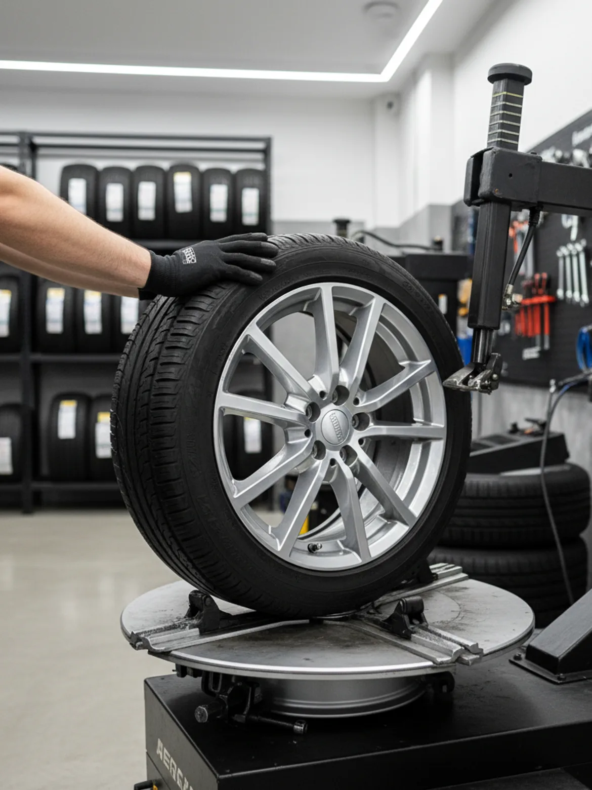
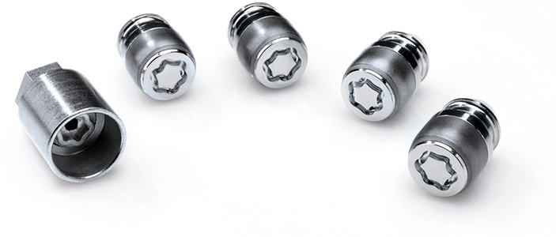
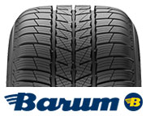
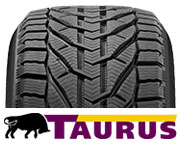
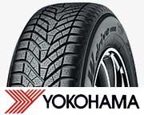
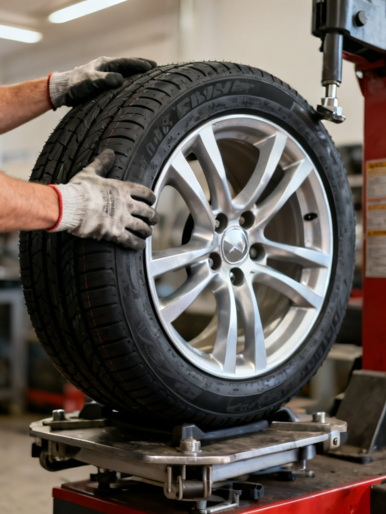

Kollár Gumiszervíz · Budapest XVI.
Gumiszerelés, centírozás, defektjavítás és gumitárolás a Csömöri úton. Foglaljon időpontot online néhány perc alatt, és nem kell sorban állnia.
218 értékelés a Google-on
Foglaljon időpontot
Válasszon szabad idősávot online, és nem kell sorban állnia. Ha jobban szereti, egy telefon is elég.
Időpontfoglalás +36 30 248 6688Nyitvatartás: Hétfő–Péntek 8:00–16:45
Cím: Csömöri út 33., Budapest XVI.
4,8 ★ értékelés
218 Google vélemény
Online időpontfoglalás
Bankkártyás fizetés
készpénz is
Gyors, precíz munka
amíg megvárja
Vélemények
„Regóta járok ide, pontos és precíz szakemberek! Az időpont foglaló rendszer pedig nagyon nagy találmány!!!”
Gábor Hajnal
Google értékelés
„Villogó TPMS-hibával mentem hozzájuk, online kértem időpontot, és gyakorlatilag azonnal segítettek megoldani a gondot. Köszönöm a segítséget!”
Patrik Pekár
Google értékelés
„Utcáról beesve, csavarral a kerekemben is készségesen fogadtak, soron kívül megmentették az autómat. Nagyon hálás vagyok, köszönöm nektek mégegyszer!”
Zsuzsanna Balogh
Google értékelés
„Bátran ajánlom őket! Megbízhatóság, minőség, gyorsaság, precizitás kedvességgel fűszerezve. Köszönöm a munkátokat!”
Krisztina Molnár
Google értékelés
„9 éve járok hozzá. Mindig gyors, precíz munkát kapok. Tegnap raktak fel 4 új téli Barumot. Köszönöm, srácok!”
László Vajda
Google értékelés
„Évek óta hozzájuk járok. Megbízhatóak, segítőkészek és kedvesek. Jó időbeosztással dolgoznak, még sosem kellett várnom csúszás miatt. Csak ajánlani tudom mindenkinek.”
Katalin Durajda
Google értékelés
Speciális szolgáltatás
Beletört vagy elveszett kulcsú kerékőr? Ne bajlódjon vele: szakszerűen leszedjük, darabonként 5 500 Ft-ért. Sokan kifejezetten ezért keresnek meg minket.
Időpontfoglalás
Általunk használt márkák




Rólunk
A Kollár Gumiszervíz a Csömöri úton várja az autósokat. Gumiszereléssel, centírozással, defektjavítással, felnijavítással és gumitárolással foglalkozunk, személyautótól a kistehergépjárműig.
Sokan évek óta visszajárnak hozzánk, mert pontos, precíz munkát kapnak, és nem kell fölöslegesen várniuk. Aki időpontot foglal, azt időpontra fogadjuk.
Az online foglalórendszerünkkel pár perc alatt lefoglalhatja a megfelelő idősávot, így nem telefonálgatással telik a napja. Ha jobban szereti, hívjon bátran.
Bankkártyás fizetést is elfogadunk. Egy dologhoz viszont ragaszkodunk: 9 évnél régebbi gumit biztonsági okból nem szerelünk fel.
Szolgáltatások
Nyári és téli gumik fel- és leszerelése, szezonális átszerelés személyautóra, SUV-ra és kistehergépjárműre. A szelep és a centrírsúly benne van az árban.
Kerékkiegyensúlyozás hozott vagy felszerelt keréken. Megszünteti a kormányremegést, és kíméli a futóművet meg a gumit.
Gumidefekt szakszerű javítása segédanyagokkal. Ha beesik hozzánk egy csavarral a kerekében, igyekszünk soron kívül megnézni.
Lemez- és alufelni javítás, alufelni görgőzés 17"-tól 20"-ig, hegesztés. A behorpadt vagy ütött felni újra használható lesz.
GumiHotel: a szezonon kívüli gumikat és szerelt kerekeket tároljuk garnitúránként. Tavasszal és ősszel csak behozza az autót, a többi a mi dolgunk.
TPMS szelepek programozása, cseréje és ellenőrzése. A guminyomás-ellenőrző lámpa kialszik, mire elhagyja az udvart.
Így dolgozunk
Online kiválasztja a szabad idősávot, vagy felhív minket a +36 30 248 6688 számon. Megbeszéljük, mire van szüksége.
Időpontra fogadjuk, így nem kell sorban állnia. A munka jó részét akár meg is várhatja nálunk.
Gyorsan és precízen dolgozunk. Megmutatjuk, mit találtunk, és csak azt csináljuk meg, amire tényleg szükség van.
Fizethet bankkártyával vagy készpénzzel. Pár perc, és már viheti is az autót.
Foglaljon online néhány kattintással, vagy hívjon a +36 30 248 6688 számon. Hétfőtől péntekig 8:00 és 16:45 között várjuk.
Hívjon mostGyakori kérdések
A legegyszerűbb online, a weboldal Időpontfoglalás menüpontjában: kiválasztja a szabad idősávot, és kész. Ha inkább telefonálna, hívjon a +36 30 248 6688 számon, hétfőtől péntekig 8:00 és 16:45 között.
Ha van szabad kapacitás, igyekszünk soron kívül is segíteni, főleg defekt esetén. Időponttal viszont biztosan nem kell várnia, ezért ezt ajánljuk, különösen a szezonális csúcsidőszakban.
Személyautó, terepjáró, SUV és kistehergépjármű kerekeit szereljük. A terepjáró és a SUV átszerelése néhány esetben kis felárral jár, ezt mindig előre jelezzük.
Igen, bankkártyát és készpénzt is elfogadunk.
Az áraink nyilvánosak, megtalálja őket az Áraink oldalon. A személyautó kerékcsere és centírozás 16 collig 3 500 Ft-tól indul. A pontos árat a jármű típusa és a felni mérete határozza meg.
Igen, GumiHotel szolgáltatásunk keretében. Egy garnitúra gumi tárolása 7 900 Ft/szezon, szerelt keréké 9 900 Ft/szezon.
Igen. Biztonsági okból 9 évnél régebbi gumit nem szerelünk fel, akkor sem, ha még jó állapotúnak tűnik. Az öreg gumi anyaga elöregszik, és menet közben veszélyessé válhat.
Ellátott terület